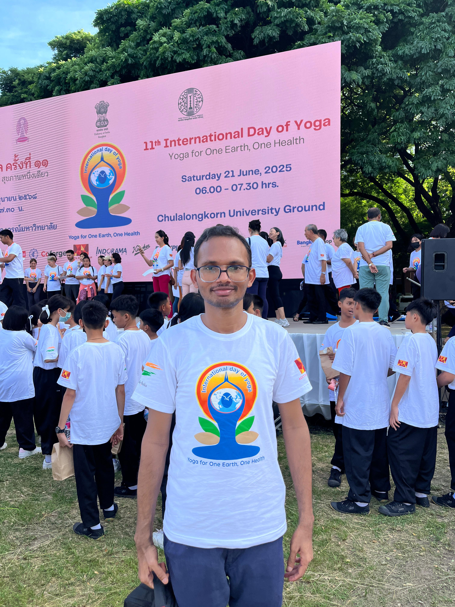
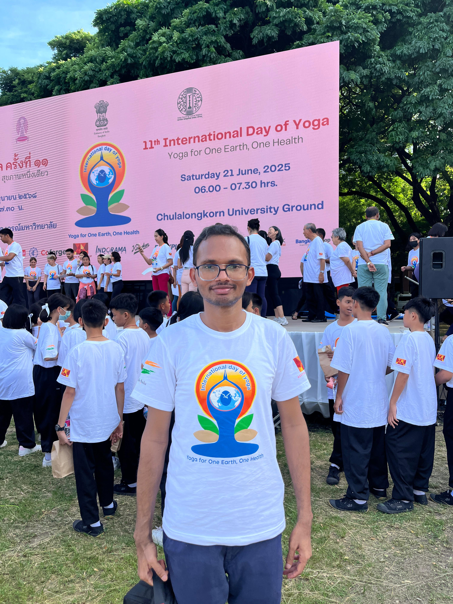

PhD | R&D Senior Power Electronics Engineer | Bangkok
About Me
Hello! I am calm, patient, and highly ambitious in professional career. I value family, love Vedic traditions and yoga, and enjoys spending time in nature. I believe in a balanced and healthy lifestyle, and is known for being friendly and adaptable to different environments.
DOB: 32 years (Born 1993)
Nakshatra: Hasta, 3rd pada
Rasi: Kanya
Height: 5 ft 6 inch
Education: PhD – Power Electronics at IIT Bombay, MTech – Electrical Engineering at NIT Rourkela (Website)
I come from a close-knit and hardworking family that values education, traditions, and mutual support. Our family believes in perseverance, strong values, and supporting one another through life’s challenges.
Lifestyle & Interests
Hobbies: DIY projects, Gardening, Listening to podcasts, Visiting museums/galleries/exhibitions, Technology, Tutoring, Volunteer work, Alternative healing/medicine, Book clubs, Social service, Writing
We are looking for an emotionally mature and adaptable partner who values family, culture, and mutual respect. She should be kind-hearted, honor traditions, treat elders with care, and lead a balanced and harmonious life.
Open to relocating abroad when needed
Spiritually inclined (Yoga/Meditation)
Respect for cultural and family values
Age: 24-30 years
Height: 4'6" - 5'8"
Marital Status: Never Married
Mother Tongue: Telugu
Religion: Hindu, Caste: Velama, Dosham: No Dosham
Education: Preferably Bachelors/Masters (Engineering), or Any
Occupation: Any
Contact
For inquiries, please contact via phone or email:
Phone: Will be provided personally
Email: mbnraok[AT]gmail.com
Preferably via WhatsApp as I am in Bangkok currently.
 
